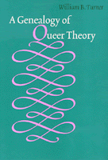

<body bgcolor="#FFFFFF" text="#000000" link="#0000FF" vlink="#CC0000" alink="#CC0000"><center><hr width="350" size="1" align="center" noshade>An accessible history of queer&#151not gay/lesbian&#151theory and its academic importance<hr width="350" size="1" align="center" noshade><p><a href="https://cdcshoppingcart.uchicago.edu/Cart/ChicagoBook.aspx?ISBN=9781566397865&&PRESS=temple" target="_top">Buy this book!</a> | <a href="https://cdcshoppingcart.uchicago.edu/Cart/Cart.aspx?PRESS=temple" target="_top">View Cart</a> | <a href="https://cdcshoppingcart.uchicago.edu/Cart/Cart.aspx?PRESS=temple" target="_top">Check Out</a></p><p></p></center><!--none//--><h1>A Genealogy of Queer Theory</h1>
<h3>William B. Turner</h3>
<P>cloth 1-56639-786-3 $90.50, Aug 00, <FONT COLOR=#990033>Available</FONT>
<br>paper 1-56639-787-1 $33.95, Aug 00, <FONT COLOR=#990033>Available</FONT>
<br>Electronic Book 1-43991-163-0 $32.95 <FONT COLOR=#990033>Available</FONT>
<BR> 256 pp
6x9
</P><BLOCKQUOTE><I>"</I>A Genealogy of Queer Theory<I> is a lucid intellectual history of queer theory and its relationship with queer history. Putting Foucault at the center, Turner provides a valuable guide to the twists and turns of queer theory, analyzing the work of a wide range of scholars who have revolutionized the way we think about the queer past, queer identity, and queer politics."</I>
<br>&#151<b>Leila J. Rupp</b>, Ohio State University, author of <I>A Desired Past: A Short History of Same-Sex Love in America</I><I></I></BLOCKQUOTE>
<P>Who are queers and what do they want? Could it be that we are all queers? Beginning with such questions, William B. Turner's lucid and engaging book traces the roots of queer theory to the growing awareness that few of us precisely fit standard categories for sexual and gender identity.
<P>Turner shows how Michel Foucault's work contributed to feminists' investigations into the ways that power relates to identity. In the last decades of the twentieth century, feminists were the first to challenge the assumption that a claim to universal identity&#151the white male citizen&#151should serve as the foundation of political thought and action. Difference matters. Race, ethnicity, class, gender, and sexuality interact, producing a wide array of identities that resist rigid definition and are mutable. By understanding the notion of transhistorical categories&#151woman, man, homosexual, and so forth&#151feminist and gay male scholars launched queer theoretical work as a new way to think about the politics of gender and sexuality.
<P><I>A Genealogy of Queer Theory</I> probes the fierce debates among scholars and activists, weighing the charges that queer readings of texts and identity politics do not constitute and might inhibit radical social change. Written by a historian, it considers the implications of queer theory for historical inquiry and the distinction between philosophy and history. As such, the book will interest readers of gay/lesbian/bisexual/transgender studies, intellectual history, political theory, and the history of gender/sexuality.
<BR>&nbsp;<h2>Reviews</h2>
<p><i>"This provocative, accessible introduction to the controversial field of 'queer theory' illuminates, engages, and edifies. Readers across the academic disciplines, and throughout a diversity of activist locations, will find points of entry, lucid guideposts, and questions of clear significance here."</i>
<br>&#151<b>Lisa Duggan</b>, author of <i>Sapphic Slashers: Sex, Violence and American Modernity</I>
<p><I>"Turner draws greatly from feminist scholars and Foucault to challenge the presumption of an unfolding rationality that places scientific discourses at a remove from politics, and instead analyzes them in political practice."</I>
<br>&#151<b><I>Choice</I></b>
<p><i>"William B. Turner provides an entr�e into the realm of queer theory that is both accessible and critical. Indeed, unlike some similarly titled books, this one will work well for undergraduates, who should also read the many works Turner so carefully summarizes. This book will work, as well, for budding critics within history and literature and for those intellectuals at the margin of the academy who wish to understand our trends and challenge the strictures of our culture."</i>
<br>&#151<b><i>The Journal of American History</i></b>
<p><i>"Turner's book is valuable when it provides the lineage and background of queer theory..."</i>
<br>&#151<b>H-Net</b>
<p><i>"Genealogy is, well, a queer thing. And it's that much more queer if the subject of that genealogy is troubled, incipient, and contested. For historians of sexuality and difference, however, there might well be untapped theoretical materials that could help us in ways that Foucault cannot, however we understand his significant contributions."</i>
<br>&#151<b><i>International Gay & Lesbian Review</i></b>
<p><i>"Turner is a careful and thorough historian who is intent on writing a highly readable narrative of the genealogy of a body of theory as queer in its twists and turns as it is in its subject matter."</i>
<br>&#151<b><i><a href="../reviews/1504_review.html">Affilia</a></i></b>
<BR>&nbsp;<h2>Contents</h2><P>
<p>Series Foreword &#150 Robert Dawidoff
<br>Acknowledgments
<br>Introduction: The Proliferation of Queers
<br>1. Foucault Didn't Know What He Was Doing, and Neither Do I
<br>2. I Am the Very Model of the Modern Homosexual: Gay Male Historians and the History of Sexuality
<br>3. Gender Difference: Feminist Scholars on the Truth of Gender and Sexuality
<br>4. Shrinking History: Queer Theory, Psychoanalysis, and Genealogy
<br>5. A Georgia Sodomite in King Henry's Court: The Rhetorical History of "Homosexuality" in Law and Politics
<br>Conclusion: On the Cost of Telling the Truth
<br>Notes
<br>Bibliography
<br>Index
</P><BR>&nbsp;<H2>About the Author(s)</H2>
<P><B>William B. Turner</B> is a Visiting Assistant Professor of History at Middle Tennessee State University. He is the co-chair of the Lesbian and Gay Coalition for Justice, and the co-editor of the forthcoming book <I>Creating Change: Public Policy, Civil Rights and Sexuality</I>.</P>
<BR><H2>Subject Categories</H2>
<p><A HREF="/tempress/american.html" TARGET="_top">American Studies</a>
<BR><A HREF="/tempress/gender.html" TARGET="_top">Gender Studies</a>
<BR><A HREF="/tempress/sexual.html" TARGET="_top">Sexuality Studies/Sexual Identity</a>
</p>
<BR><h2 class="inpageheading">In the series</H2>
<P><I><a href="http://www.temple.edu/tempress/am_subjects.html" onMouseOver="window.status='Click for other books in this series!'; return true;" onMouseOut="window.status=''; return true;" target="_top">American Subjects</a></i>, edited by Robert Dawidoff.
</p><p>The <I>American Subjects</I> series, edited by Robert Dawidoff, will introduce readers to unfamiliar areas or figures in American culture. All of the titles in this series will be the first on their particular subject. Each will tell an unfamiliar story and will emphasize the cultural side of how Americans have lived and what they have created or thought.</p>
<p align="center"><a href="https://cdcshoppingcart.uchicago.edu/Cart/ChicagoBook.aspx?ISBN=9781566397865&&PRESS=temple" target="_top">Buy this book!</a> | <a href="https://cdcshoppingcart.uchicago.edu/Cart/Cart.aspx?PRESS=temple" target="_top">View Cart</a> | <a href="https://cdcshoppingcart.uchicago.edu/Cart/Cart.aspx?PRESS=temple" target="_top">Check Out</a></p><p><font face="Arial" size="1"><a href="copyright.html" onMouseOver="window.status='Web Copyright Policy';return true;" onMouseOut="window.status=''" title="Web Copyright Policy">&copy;</a> 2015 <a href="http://www.temple.edu" target="new" onMouseOver="window.status='Link to Temple University home page';return true;" onMouseOut="window.status=''" title="Link to Temple University home page">Temple University</a>. All Rights Reserved. http://www.temple.edu/tempress/titles/1504_reg.html</font></p>